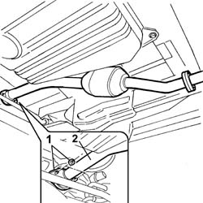
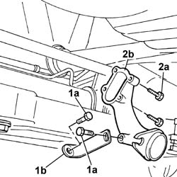
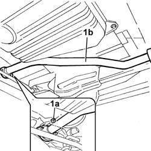
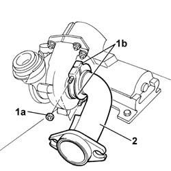

1064A50 SLEEVE JOINING TURBO CHARGER AND EXHAUST PIPE - R + R AND REPLACE SEAL
- Path
- Procedures > 10 ENGINE UNIT > 1064 TURBO CHARGING SYSTEM > 1064A TURBO CHARGER ASSEMBLY > 1064A50 SLEEVE JOINING TURBO CHARGER AND EXHAUST PIPE - R + R AND REPLACE SEAL
- Kind
- repair procedure (removal / refitting; the operation number is the code)
- Applies to
- engines: 2.8 JTD 8V; all production periods
- Interactive page
- https://sloeber94.github.io/elrnDB-fDct/en/#/244000863
Applies to: engines: 2.8 JTD 8V; all production periods
 Removing
Removing
 Refitting
Refitting
Applies to: engines: 2.8 JTD 8V; all production periods

Applies to: engines: 2.8 JTD 8V; all production periods
Refitting
RemovingApplies to: engines: 2.8 JTD 8V; all production periods; only with equipment: POWER Setup
Removing
Refitting
Applies to: engines: 2.8 JTD 8V; all production periods; only with equipment: POWER Setup

Applies to: engines: 2.8 JTD 8V; all production periods; only with equipment: POWER Setup
Refitting
Removing